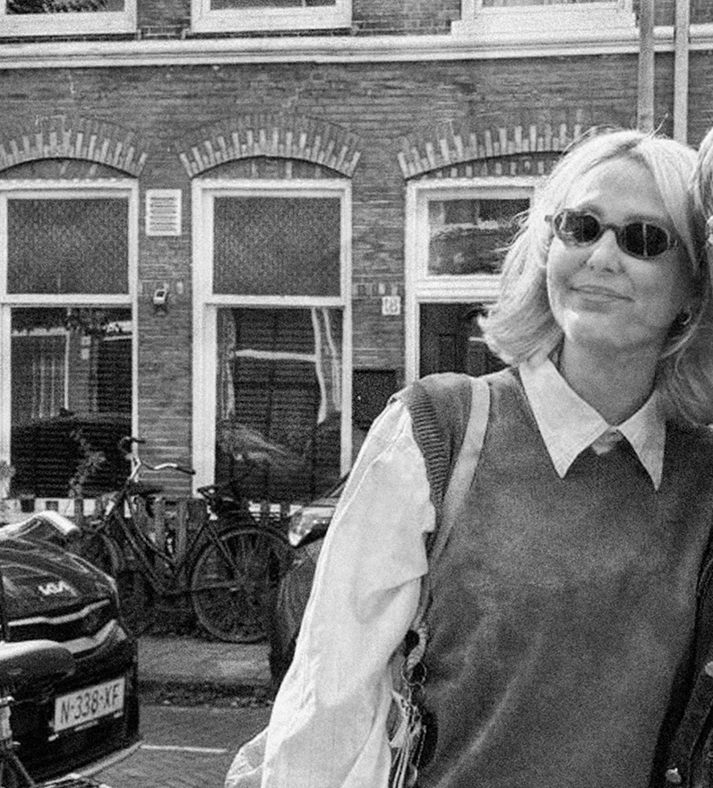

Hi! My name is Lira
I'm a creative, curious designer with a background in Landscape Architecture and more recently, I completed a Diploma of Graphic Design. I've always had a genuine passion for design, problem-solving, and understanding how people interact with the world around them.
My experience working in Landscape Architecture has taught me to look at things from different perspectives, think both creatively and practically, and turn ideas into thoughtful, meaningful outcomes. I love learning, exploring new ways of doing things, and challenging myself to step outside of what I already know.
I'm a firm believer that good design is about more than how something looks; it's about how it communicates, how people experience it, and the thought behind it. I enjoy getting stuck into a problem, asking questions, and figuring out how to make something work better.
I'm excited to keep expanding my skillset, explore different areas of design, and create work that is both considered and a little bit different.
Feel free to get in touch here